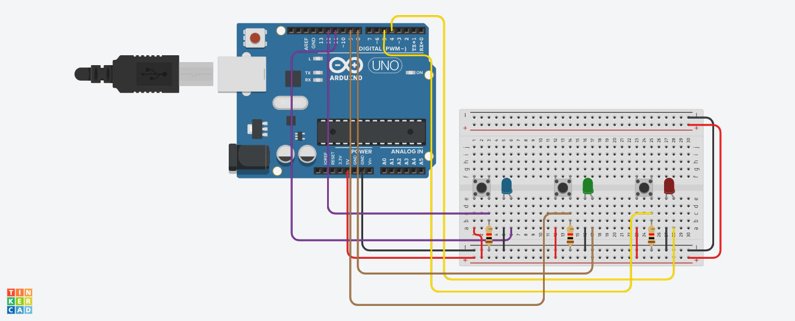

7-variant
1-topshiriq
Internet vositalari tizimi fanidan amaliy vazifa:
Quyidagi elementlardan 1 - Tugmani bosganingizda 1-LED yonadigan,
2-tugmani bosganda 2-LED yonadigan,
3-tugmani bosganda 3-LED yonadigan dasturni tuzing.

C++ (Arduino) kod:
2-topshiriq
OYD va tarmoq dasturlash (C++, Java) fanidan fanidan amaliy vazifa:
Ko'paytirish (Karra) jadvalini tekshirish dasturi tuzilsin.
Foydalanuvchi 2 ta son kiritsin. Bu sonlarning qiymatlari
1 dan katta, 9 dan kichikligini tekshirilsin. Ikki sondan keyin
ularning ko'paytmasi javobi ham kiritilsin. Agar javob to'gri kiritilsa,
foydalanuvchini tabriklansin, agar javob notog'ri bo'lsa uni ko'paytirish
jadvalini yodlashi va to'g'ri javob haqidagi habar bersin.
C++: